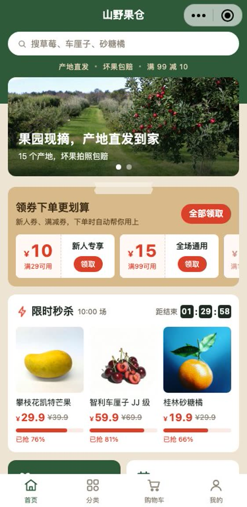

陈记粉面点餐 + 会员储值小程序
顾客扫桌上的码点单、充值当会员；老板在手机上接单、出餐、改菜单。
看录屏、自己试
山野果仓商城 + 营销小程序
商品、购物车、下单付款、发货物流都有，再加上领券、秒杀、抽奖、签到积分这些拉回头客的玩法。
看录屏、自己试
蓝工到家预约 + 派单小程序
顾客选服务、约时间；后台把单派给师傅，师傅在手机上接单、打卡、拍完工照。
看录屏、自己试想做一个类似的
加微信，说说你的店和想要的功能，按你的生意来改。
微信：business_rick
三个最常被问到的类型，每个都带商家后台。点进去先看录屏，再自己点一下，数据是假的随便点。
顾客扫桌上的码点单、充值当会员；老板在手机上接单、出餐、改菜单。
看录屏、自己试
商品、购物车、下单付款、发货物流都有，再加上领券、秒杀、抽奖、签到积分这些拉回头客的玩法。
看录屏、自己试顾客选服务、约时间；后台把单派给师傅，师傅在手机上接单、打卡、拍完工照。
看录屏、自己试加微信，说说你的店和想要的功能，按你的生意来改。
微信：business_rick